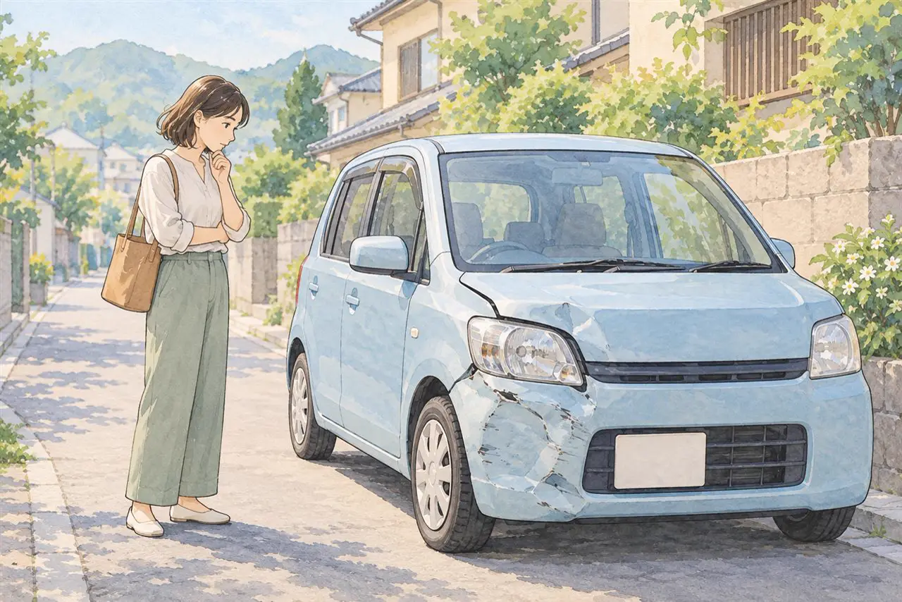

古い車・走行距離が多い車の方へ
20年以上前の古い車・10万km超えの車でも値段はつく？
廃車にする前に知っておきたい見方
公開
こんにちは、東京都足立区江北で自動車解体・廃車買取をしている「大崎商店 環七店」です。
「20年以上乗った車だけど、値段はつくのかな」
「10万kmを超えているから、もう0円だと思う」
「ディーラーで、下取りは0円と言われた」
古い車や、たくさん走った車は、「もう値段はつかない」と思われがちです。
でも、古い車・走行距離が多い車でも、値段がつくことがあります。この記事では、値段がつく理由と、つきにくい場合、廃車にする前に確認したいことを、やさしくご紹介します。後半では、足立区の大崎商店の場合もご案内します。
① 古い車・走行距離が多い車は、値段がつかない？

結論からお伝えすると、年式が古い、走行距離が多いというだけで、必ず0円になるわけではありません。
一方で、年式が古くなる、走行距離が増えると、中古車としての価値は、下がりやすくなります。中古車の査定では、車種、年式、グレード、走行距離、車の状態などを総合して見るのが一般的です。
この記事で取り上げる「10万km」「20年」は、買取の可否を一律に決める基準ではありません。この数字を超えたからといって、すぐに値段がつかなくなる、と決まっているわけではありません。
同じ年式・走行距離でも、車種や、車の状態、依頼先によって、見られ方が違うことがあります。
② 古い車にも、値段がつくことがある理由
古い車に値段がつくのは、中古車として売れる場合と、解体する車でも、価値がある場合があるからです。
中古車として、再び売れる場合
- 年式が古くても、状態がよく、そのまま乗れる車
- 車種に人気がある車
- 車検が残っている車
こうした車は、再販売できる車として、値段がつくことがあります。実際の評価は、車種や状態、その時点の需要、依頼先によって異なります。
解体する車でも、価値がある場合
車が古くて、中古車として再販売するのが難しい場合でも、取り外した部品や、金属などの資源が、再利用されることがあります。
そのため、解体する車でも、部品や資源として、買取価格がつく場合があります。
ただし、状態の悪い部品、古すぎる部品は、再利用できないことも多くあります。また、車の状態や、重さ、積み込みのしやすさによっても、変わります。
③ 値段がつきにくい場合

次のような場合は、買取価格がつきにくいことがあります。
- 年式が古く、走行距離も多い
- 事故や、水没などで、大きく傷んでいる
- 長く放置していて、車の状態が悪い
- 部品が外れている、欠けている
ただし、値段がつかなくても、廃車にできないわけではありません。引き取りの費用や、手続きの費用が、かかる依頼先もあります。費用がかかるかどうかは、依頼先に確認しましょう。
④ 古い車は、税金が重くなることがあります
古い車は、税金が、重くなることがあります。
- 自動車税（普通車などの登録車）：4月1日時点で、初回新規登録からガソリン車・LPG車は13年超、ディーゼル車は11年超になると、原則として概ね15%重くなります（バス・トラックは概ね10%）。ガソリンを燃料とするハイブリッド車や、電気自動車などは対象外です（東京都主税局の案内）
- 軽自動車税（三輪・四輪以上）：初めて車両番号の指定を受けてから13年を経過すると、翌年度から重課の対象になります。たとえば自家用の軽乗用車は、年額12,900円です。電気自動車・ガソリンハイブリッド車など、対象外の車もあります（足立区の案内）
- 自動車重量税：車検などの際に納める税金です。エコカー等の区分に当たらない車では、13年経過・18年経過で税額が高くなります。すべての車が年数だけで重くなるわけではありません
税金の金額は、車の種類や重さ、登録時期によって異なります。くわしくは、東京都主税局・国土交通省などの公式案内や、お手元の納税通知書・車検の見積もりで確認してください。
廃車の手続きや時期によって、戻ってくる税金もあります。普通車の自動車税は、納付済みなら抹消登録した月の翌月から年度末までの分が還付の対象になりますが、軽自動車税には、年度途中の廃車による月割り還付はありません。
普通車・軽自動車とも、自動車重量税の通常の廃車還付には、適正な解体と解体に伴う手続き・還付申請が必要です。制度上の車検残存期間が1か月以上あることなどが条件で、車検が残っている車を売るだけで、重量税が還付されるわけではありません。
くわしくは、廃車にするとお金は戻ってくる？還付金のこと、3月中に廃車した方がいい理由の記事をご覧ください。
車を持ち続ける場合の維持費を計算して、手放すかどうかを考える方法は、「車の維持費は月いくら？あまり乗らない車を手放すかどうかの判断の目安」の記事をご覧ください。
⑤ 廃車にする前に、依頼先へ確認したいこと
古い車を手放すときは、依頼先によって、値段や条件が違います。次の点を、確認しましょう。
- 中古車として売る話なのか、解体する車として引き取る話なのか
- 買取価格がつくか。つかない場合、引き取りに費用がかかるか
- レッカー代・解体費用・手続き代行費用・印紙代など、ほかに費用がかかるか
- リサイクル料金の扱い（預託ずみの分は、通常は再度支払いません。中古車として売る場合は、資金管理料金を除くリサイクル料金相当額の受け取りも確認します。解体する場合、預託ずみの料金は解体・再資源化に使われ、返金されません）
- お支払いの方法と時期
- 必要な書類（車検証、印鑑証明書など）
買取価格は、還付金・自賠責保険の返戻金などを含む金額なのか、別に受け取る金額なのかも確認してください。費用と精算分を合わせて、最終的に受け取る金額・支払う金額を確かめると安心です。
値段がつかないと言われても、すぐにあきらめず、別の依頼先にも、確認するのも、ひとつの方法です。ディーラーでは0円でも、廃車の専門店では、値段がつくことがあります。
廃車にかかるお金の全体像は、廃車の手数料・解体費用・レッカー代は？の記事をご覧ください。
車の買い替えで古い車を手放すときの考え方は、「車を買い替えるとき、古い車はいつ・どう手放す？下取り・売却・廃車買取の考え方と、タイミングの注意」の記事をご覧ください。
よくある質問
Q. 20年以上前の古い車でも、値段はつきますか？
A. つくことがあります。年式だけで決まるわけではなく、車種や、車の状態、依頼先によって異なります。
Q. 10万kmを超えたら、値段はつきませんか？
A. 必ずつかなくなるわけではありません。走行距離が多いと中古車としての価値は下がりやすいですが、車の状態や車種によって異なります。
Q. ディーラーで0円と言われました。値段はつかないのでしょうか？
A. ディーラーの下取りと、廃車の専門店の買取では、見ているところが違うことがあります。ほかの依頼先にも、確認してみましょう。
Q. 車検が切れている車でも、値段はつきますか？
A. つくことがあります。車検が切れていても、依頼先に引き取りを相談できます。くわしくは、車検切れの車は公道を走れない。どうやって廃車にする？の記事をご覧ください。
Q. 事故で壊れた車や、動かない車でも、値段はつきますか？
A. 車の状態によって異なります。くわしくは、足立区で事故車を買い取ってもらうには？の記事をご覧ください。
Q. 値段がつかない場合、廃車の費用はかかりますか？
A. 依頼先によって異なります。引き取り費用や、手続き費用がかかるかどうかを、事前に確認してください。
大崎商店の場合：古い車・走行距離が多い車のご相談
ここからは、足立区の大崎商店の場合を、ご案内します。
大崎商店は、古い車、走行距離が多い車、車検が切れた車、事故車・不動車のご相談も、お受けしています。
- 普通車は、再販売できる車は一時抹消、解体する車は永久抹消（先に一時抹消ずみなら解体届出）。軽自動車は、一時使用中止・解体返納（先に一時使用中止ずみなら解体届出）など、車の状態に応じてご案内します。解体する車でも、先に一時抹消・一時使用中止を行うことがあります
- 解体する車にも、部品や資源として、買取価格がつく場合があります
- ハイエースなど、トヨタ車は、値段がつきやすいです。10年前の車でも、買い取りできた例があります
- 年式・走行距離で、「ここから先は買い取れない」という線は、ありません。 買取価格がつくかどうかは、車ごとに異なります。買取価格が1万円ほどの車も、お買い取りしています（お持ち込みの場合も、特別な条件はありません）
- 車検が残っている車は、解体などの条件を満たせば、重量税の還付等を受けられる場合があります。当店では、還付金・返戻金等の見込額を買取価格に含め、当店が受け取る形が多くなっています。含めた分がお客様に別途、二重に支払われるわけではありません。ご自身で受け取る方法についてもご相談ください（くわしくは、廃車にするとお金は戻ってくる？還付金のこと）
- 修理して再販売する車や、引き続き使用する車は、資金管理料金を除くリサイクル料金相当額を買取価格に上乗せしてお支払いします。解体する車の預託済みリサイクル料金は返金されません
- 解体費用・手続き代行費用・印紙代は、別請求しません
- 足立区内は、引き取り無料です
- 足立区外も、買取価格がつかない車は、環七店から片道約30分圏内は、引き取り無料
- 買取価格がつく車は、圏外でも、所在地と車の状態によっては無料で引き取り（事前にご案内します）
- 車のお持ち込みは、どこからでも歓迎（基本は環七店。日時は、事前にお電話でご相談ください）
お電話で、確認すること
ご相談のお電話では、次のことをお伺いします。車検証をお手元に、ご用意ください。電子車検証の場合、所有者の情報は券面に記載されていないため、自動車検査証記録事項や車検証閲覧アプリでもご確認ください。
- 車検証の情報（車種・年式など）
- 車検証の「所有者」「使用者」が、お電話いただいている、ご本人か
- ローンが残っているか
所有者が、ディーラー・販売店の場合でも、ご相談をお受けしています。 ただし、所有者の承諾や必要書類の確認が必要です。ローンを完済していても、所有権解除が済んでいない場合があります。ローンの残高とあわせて、進め方を確認します。ローンについては、ローンが残っている車は廃車できる？の記事もご覧ください。
くわしくは、出張引き取りの対応エリア｜無料で伺える範囲は？の記事をご覧ください。
古い車のことも、大崎商店にご相談ください
電話で相談する 03-3854-4141メールで相談する（フォーム）ご来店の前に、お電話ください。引き取りなどで外出していることもあり、お電話いただければ、受け入れの可否や、ご案内できる日時をお伝えできます。
大崎商店 環七店
電話：03-3854-4141
〒123-0872
東京都足立区江北7丁目1−3
営業時間：月〜土 10:00〜18:00
休業日：日曜・祝日
環七沿い／舎人ライナー
西新井大師西駅
大崎商店 入谷店
電話：03-3899-2837
〒121-0836
東京都足立区入谷7丁目5−11
営業時間：月〜土 9:30〜17:30
休業日：日曜・祝日・第2土曜
引き取りやご相談のお電話は、環七店がスムーズです。お電話の際は、「古い車の相談」とお伝えください。
※掲載のイラストはAIで作成したイメージです。実際の店舗・被害の様子を撮影したものではありません。
参考：東京都主税局・自動車税（経年車の重課）／足立区・軽自動車税の税額／国土交通省・自動車重量税の税額の考え方／国税庁・自動車重量税の廃車還付制度／東京都主税局・自動車税のよくある質問／足立区・軽自動車税／自動車リサイクル促進センター・リサイクル料金の支払い・受け取りの流れ／ジャックス・所有権解除の手続き／環境省・自動車リサイクルの概要